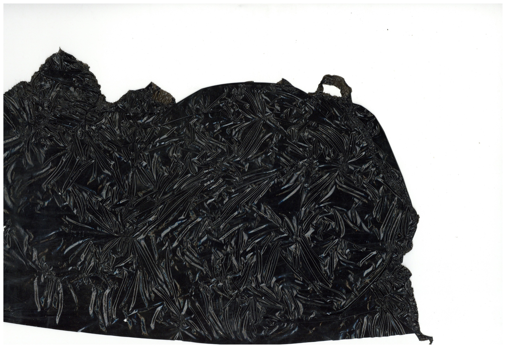
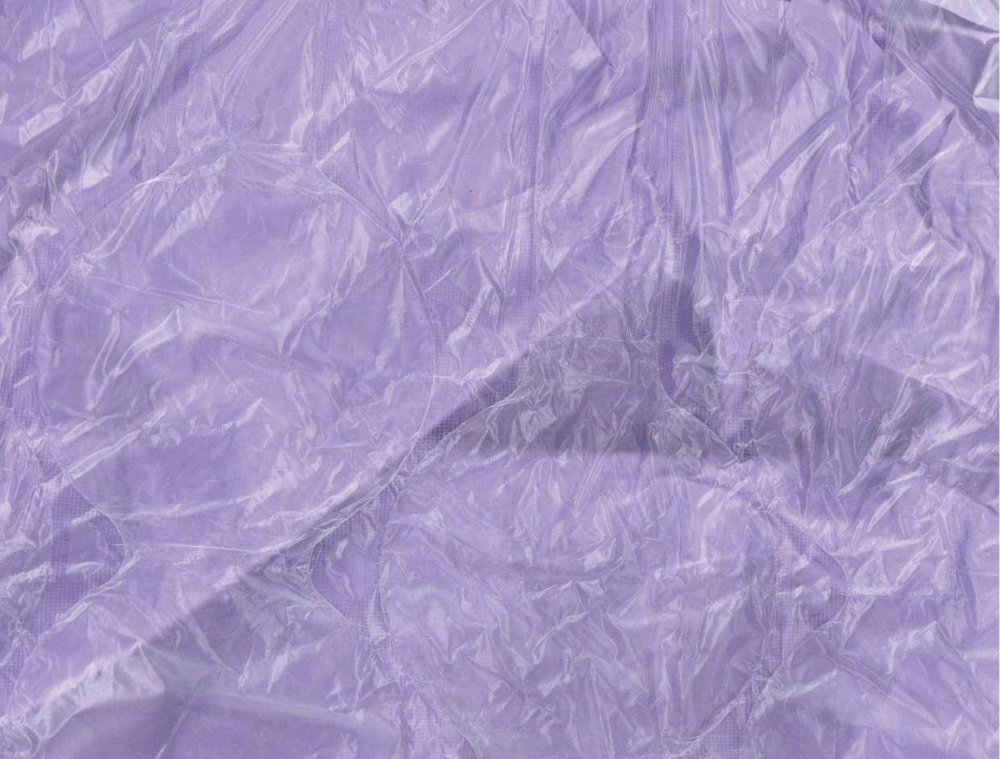
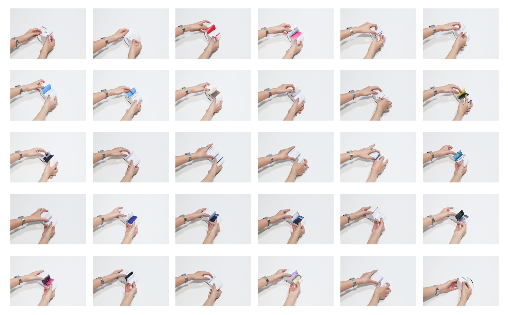
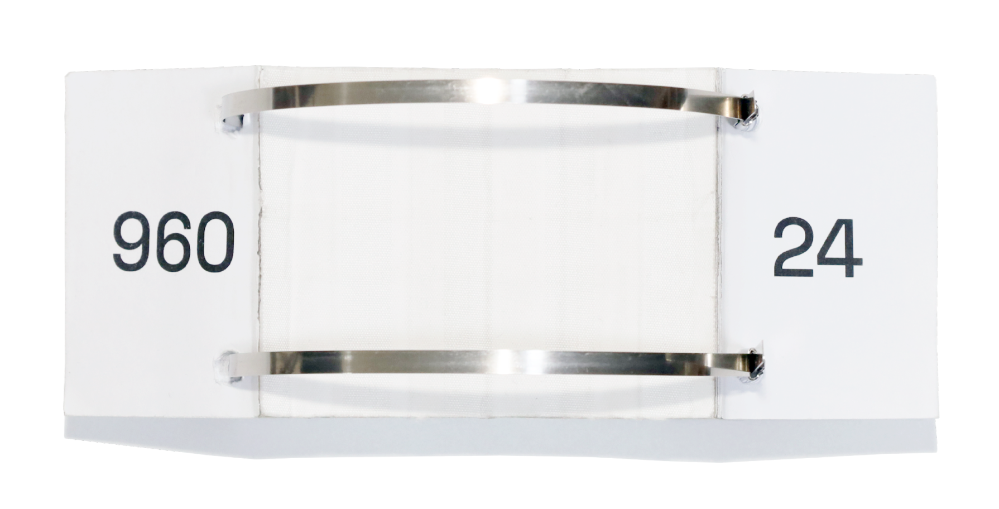
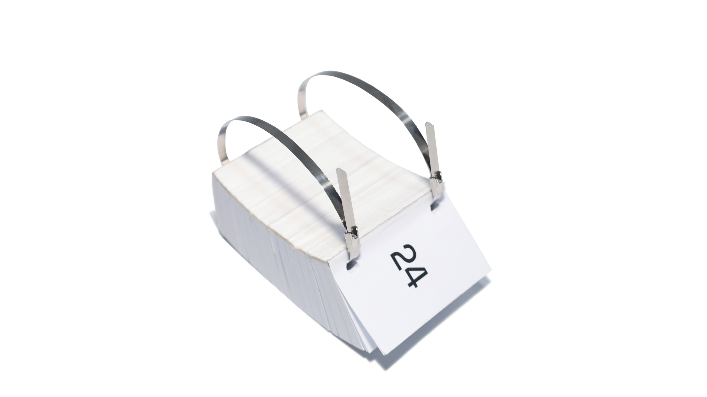
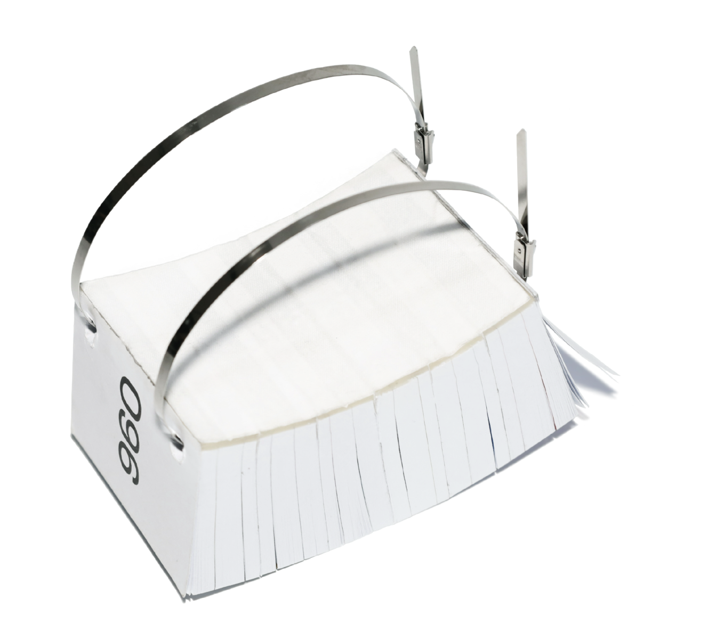
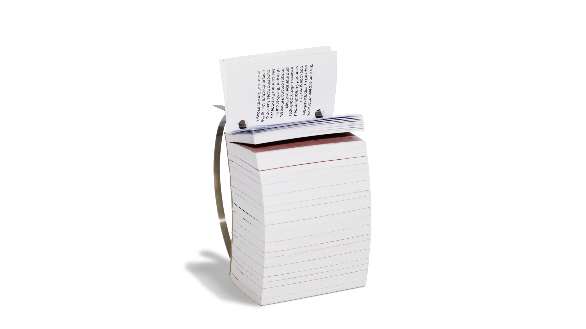

24-960
This is an experimental published work on the phenomenon of waste in express delivery packaging. The repetitive behavior of sending and receiving express deliveries in daily life, behind this seemingly convenient system, actually hides a large amount of hidden waste of resources. In the express delivery process, to ensure the integrity and safety of the goods, excessive and redundant packaging materials are often produced. After fulfilling their one-time mission, they are quickly discarded and become invisible garbage that we ignore. I collected 24 abandoned express delivery packages from real life and scanned and captured images of them. The entire book uses 960 sheets of paper and unfolds the narrative through the interweaving of images and blank Spaces. During the process of flipping through, readers will encounter a large number of blank pages, creating a sense of obstruction in the reading rhythm and making people reflect on the act of "reading", just like the delay and questioning of "consumption" itself. The center of the pages is perforated and bound with silver ties, simulating the common binding form in the packaging process of express delivery, materializing the entire book as a sealed "express delivery item". The luster reflected by the metal material symbolizes the coldness and efficiency of the industrial circulation system, while the mechanical force running through the spine is awakened with each flip, forcing the reader to establish a physical relationship with the object. 24-960 lies between publications and material installations. Through experiments with materials, rhythms and forms, it interprets a critical observation of contemporary consumer culture, visual fatigue and the material cycle.
这是一本关于快递包装浪费现象的实验性出版作品。在日常生活中不断重复的收发快递行为，这一看似便利的系统背后，却隐藏着大量资源的隐性浪费。在快递运输环节为了保障商品的完整与安全，往往产生过度、冗余的包装材料，在完成其一次性使命后便被迅速丢弃，成为我们视而不见的隐形垃圾。我从实际生活中收集了24件被遗弃的快递包装，对其进行扫描与图像采集。整本书使用了960张纸张，以图像与空白穿插的方式展开叙述，读者在翻阅过程中将遭遇大量空白页，制造一种阅读节奏的阻滞感，使人对“阅读”这一行为产生反思，如同对“消费”本身的延宕与质疑。书页中央使用银色扎带穿孔装订，模拟快递打包过程中常见的束缚形式，将整本书具象化为一个被封装的“快递物品”。金属材质反射出的光泽，隐喻工业流通体系的冷峻与效率，而贯穿书脊的机械性力量，则在每一次翻阅中被唤醒，迫使读者与物件之间建立一种身体性的关系。24-960介于出版物与物质装置之间，它通过材质、节奏与形式的实验，转译出对当代消费文化、视觉疲劳与物质循环的批判性观察。
- CL
- YU Quan，Yee Ting
- CT
- Brand
- DE
- CCC
- AD
- CCC

24 Trash




